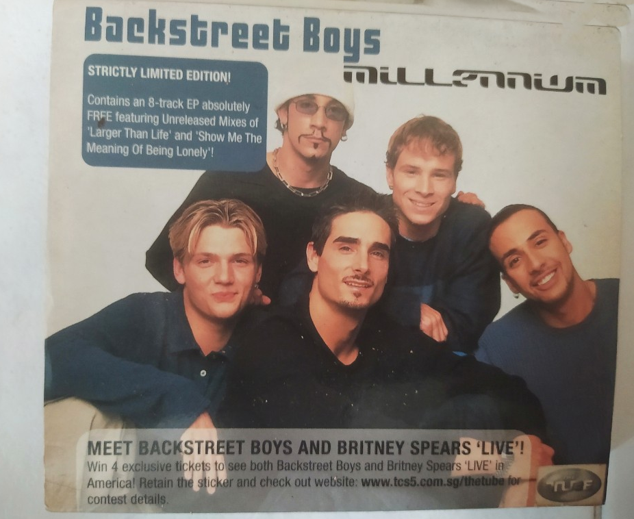
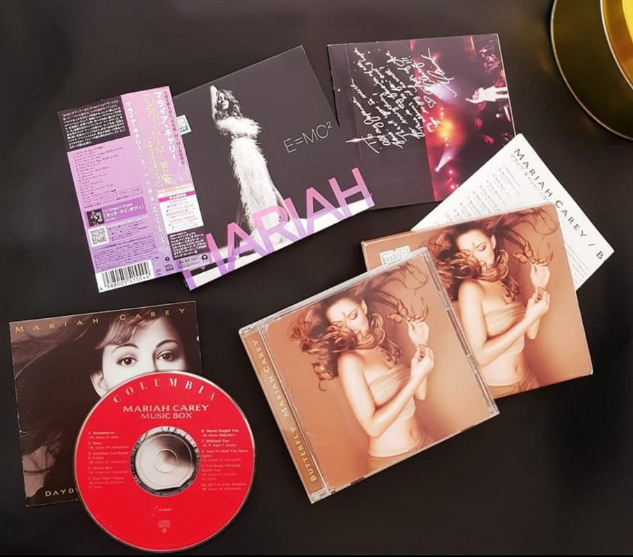

5 Alasan kenapa beli CD album fisik lebih baik daripada format digital
Seperti diketahui bahwa kebanyakan anak muda zaman sekarang ketergantungan download Mp3 gratis di internet, padahal sebenarnya tindakan ini termasuk kegiatan ilegal. Dimana era digital yang serba canggih membuat keberadaan compact disk (CD) semakin jarang anda temui. Tak hanya CD saja, tetapi juga terhadap kaset dan piringan hitam yang kini sudah sulit ditemukan pada beberapa toko musik di kota – kota besar.
Kondisi di atas terjadi karena penikmat rilisan fisik CD musik atau film saat ini sudah tak begitu banyak. Bagi mereka yang suka dengan hal yang serba praktis, lebih suka membeli karya musisi idolanya melalui gerai – gerai digital yang nantinya akan langsung terkoneksi dengan smartphone yang digunakan.
Nah, kira - kira apa saja alasan yang membuat beberapa orang menggemari membeli rilisan fisik album musik kesukaan mereka ? Rata - rata mereka adalah kelompok kaula muda yang senang dengan trend perkembangan musik sepanjang masa seperti sampai rela memesan jauh - jauh hari sebuah album kesayangan di toko – toko musik agar bisa memperoleh CD album musik impiannya.
Berikut alasannya, seperti dihimpun brilio.net dari berbagai sumber :
1. Suka mengkoleksi harta karun yang sangat bernilai di masa depan

Pada umumnya orang yang suka mengoleksi kepingan CD akan rela datang ke toko kaset langganan mereka hanya untuk membeli CD incaran guna menambah koleksi di rumahnya. Bagi anda, koleksi ini diharapkan akan bisa membanggakan dan 'bernilai' seni di masa depan.
2. Album fisik dirilis secara terbatas
Penikmat musik dari kelompok kaula muda biasanya suka berburu CD bila ada album – album yang baru dirilis. Beberapa musisi terkenal memang kadang – kadang suka mengeluarkan album dalam edisi terbatas, sehingga mau tak mau para penikmat musik tersebut akan mencari dan membeli album dari artis favorit mereka.
3. Lebih menghargai karya musisi idolanya
Bagi anda yang ngefans berat dengan musisi atau penyanyinya maka mereka akan menghargai karya musisi idolanya dengan mengkoleksi rilisan fisik album – album mereka. Sebab kebanyakan anak muda zaman sekarang ini masih tetap ketergantungan download Mp3 gratis di internet, padahal kegiatan ini adalah ilegal. Yang sebenarnya musisi zaman sekarang akan sangat berbahagia dan mengapresiasi fansnya jika karya original mereka bisa dibeli. Sebab, untuk memproduksi satu album saja, mereka tentu membutuhkan biaya yang tak sedikit.
4. Sampul album atau artwok yang makin hari makin keren

Beberapa orang ternyata suka mengoleksi lirik lagu dari sampul kaset CD. Selain liriknya lebih lengkap, desain dari sampul kaset tersebut biasanya mempunyai gambar yang unik dan menarik. Bagi para pecinta seni visual, biasanya mereka senang mengoleksi sampul kaset karena dianggap berfilosofi dan menarik terutama terhadap musisi - musisi zaman sekarang yang lebih kreatif dan profesional. Banyak band atau solois yang suka mengutamakan sampul albumnya tampil keren dan sesuai tema dengan lagu - lagu apuk yang ada di dalamnya yang diistilahkan dengan bahasa populer yaitu artwork album.
5. Mengejar merchandise official yang tak dijual bebas
Para musisi zaman sekarang seakan tak pernah merasa bosan dan patah arang meskipun karya fisiknya tak banyak dikenal dan dilirik seperti zaman dulu. Untuk mengakalinya, para musisi tersebut biasanya menjual rilisan fisiknya dengan mengusung konsep marketing yang menarik. Mereka akan memberikan bonus merchandise, seperti hadiah berupa kaos, sapu tangan, gelang, sertifikat resmi kepemilikan album, dimana semuanya itu diharapkan mampu menarik perhatian idolanya dimana biasanya merchandise yang turut disertakan dalam rilisan fisik album mereka tak dijual dengan bebas di pasaran alias langka dan wajib dikoleksi !
Nah, itulah rangkuman kami dari berbagai sumber yang perlu untuk anda ketahui saat akan membeli rilisan album fisik atau mengunduh album di gerai – gerai musik digital. Atau malah tetap download Mp3 gratis lalu mengkopi lagu - lagu di warnet. Selamat menikmati.
Source